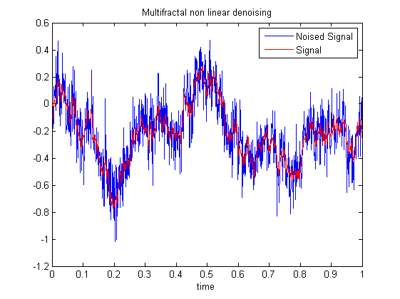
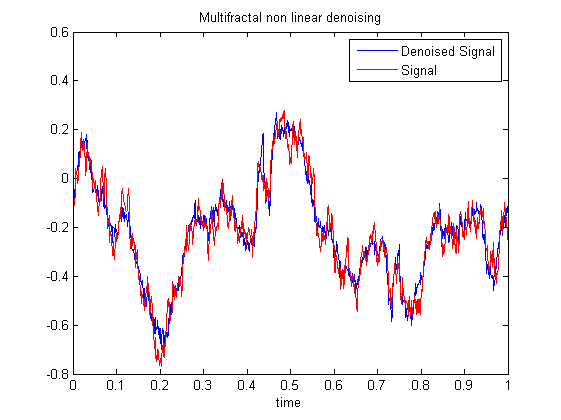

| FRACLAB Functions |
|
Performs the Multifractal Denoising of a 1D signal using a Multifractal Non Linear method
DENX = mfdnolinear1d(x,QMF)
DENX = mfdnolinear1d(...,'Propertyname',Propertyvalue)
[DENX,S] = mfdnolinear1d(...,'autothreshold')
DENX = mfdnolinear1d(x,QMF) Computes the denoised signal, DENX, of the input signal x using a specific quadrature mirror filter, QMF.
DENX = mfdnolinear1d(...,'Propertyname',Propertyvalue) Computes the denoised signal, DENX, applying the specified property settings. The property setting can be choosen from the list below :
| Property | Purpose |
|---|---|
| 'increase' |
The DENX is computed with a specific regularity increase, R. The parameter R
is a real number. If R is negative the signal is actually "noised". |
| 'threshold' |
The DENX is computed with a specific threshold, S. The parameter S is a
positive real. |
| 'level' |
The DENX is computed with a specific start level, L. The parameter L is a positive
integer in (1,log2(length(x))) that defines the start level where the computation begins. |
[DENX,S] = mfdnolinear1d(...,'autothreshold') Computes the denoised signal, DENX, of the input signal x
using an estimated threshold value, S, this value can be then returned if wanted.
If 'autothreshold' is not specified, the default value is S = 0.5.
|
The estimation of threshold value |
N = 1024 ; H = 0.5 ; t = linspace(0,1,N);
x = fbmwoodchan(N,H); b = randn(N,1);
xb = x + b/8;
QMF = MakeQMF('daubechies',4);
y = mfdnolinear1d(xb,QMF,'increase',0.3);
figure; plot(t,xb); hold on; plot(t,x,'r');
title ('Multifractal non linear denoising');
xlabel ('time'); legend('Noised Signal','Signal');
figure; plot(t,y); hold on; plot(t,x,'r');
title ('Multifractal non linear denoising');
xlabel ('time'); legend('Denoised Signal','Signal');


mfbayesian1d, mfdnorm1d, mfdpumping1d, waveshrink1d
| |
mfdbayesian2d | mfdnolinear2d | |